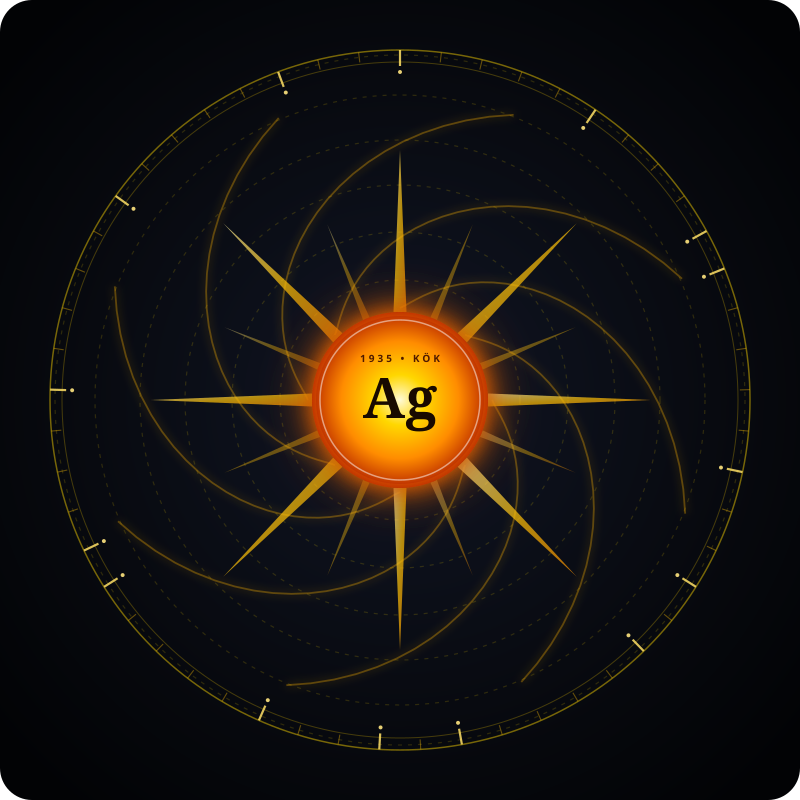

GÜNEŞ-LANG STUDIO
v1.0.0 AKADEMİK ÇEVRİMİÇİ LAB
← Ana Portala Dön
📚 Bilgi Bankası (Wiki) ↗
📄 Akademik Rapor ↗
🐙 GitHub Deposu ↗
Örnek:
🌟 01 - Merhaba Dünya & Değişkenler
🌀 02 - Özyinelemeli Fibonacci Serisi
🔢 03 - Asal Sayılar Eleği
⚡ 04 - WERR 53-Hölder Rezonansı
📊 05 - Dinamik Dizi ve Metinler
▶
Çalıştır
(Ctrl+Enter)
🧹
Temizle
🎵 Akustik Sentez:
KAPALI
📋 Kopyala
💾 İndir
1